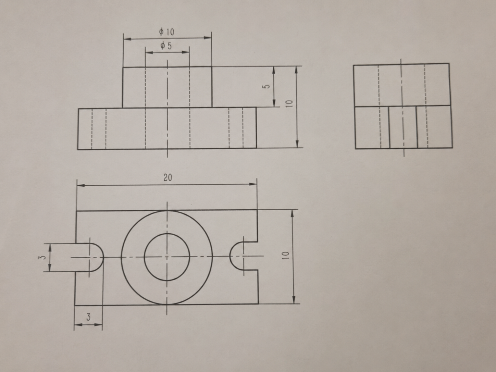
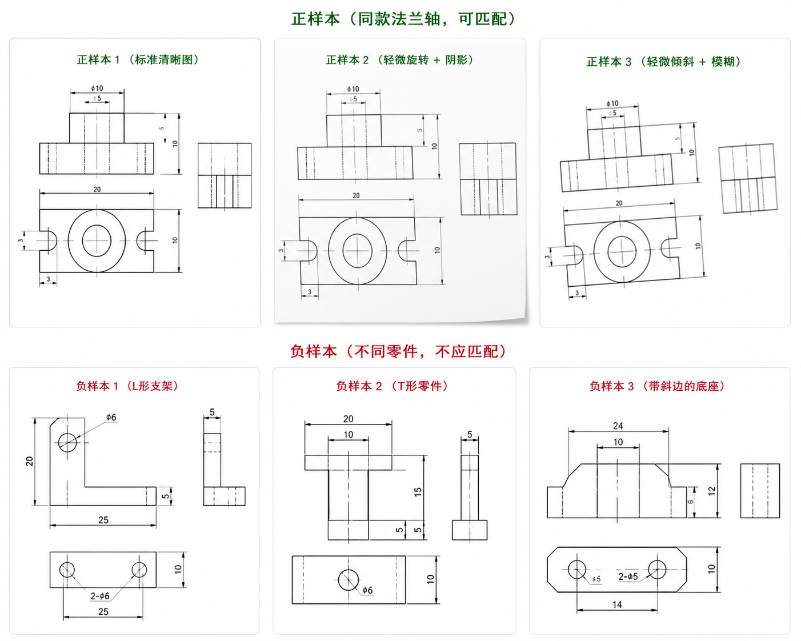
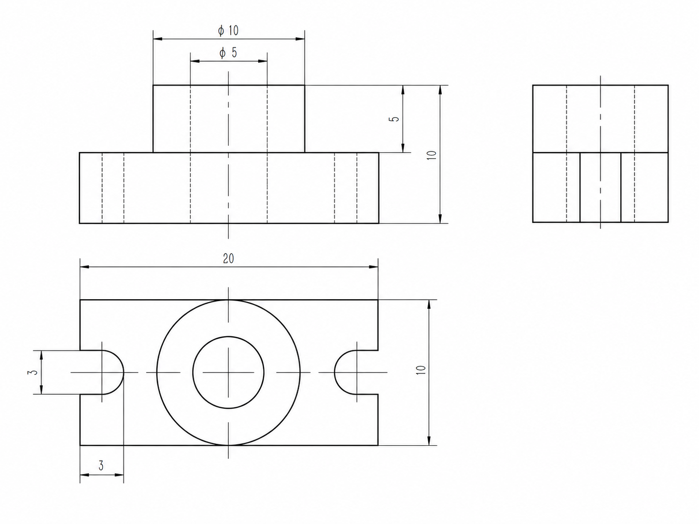

You said:
You said:
ChatGPT said:
你这个更像是一个带圆柱凸台和中心孔的支座/轴承座类零件，不是“机构”。准确说它是一个机械基础零件，可以暂时命名为：
带槽底座圆柱凸台零件
或更像教材里的叫法：
轴承座类零件
支承座类零件
带圆孔凸台底座
你去网上找测试图时，可以搜这些关键词：
工程制图 轴承座 三视图
机械制图 支座 三视图
机械制图 轴承座 零件图
带圆孔支座 三视图
工程制图 凸台 底座 三视图
机械制图 基座 零件图
更建议你先用同一张图生成几张“测试变体”，比如轻微旋转、裁剪、拍照倾斜、加噪声、亮度变化，这样最适合测试 OpenCV 识别稳定性。下面我给你生成一张相似的工程制图测试图。
You said:
You said:
You said:
ChatGPT said:

ChatGPT said:

ChatGPT said:

You said:
You said:
You said:
ChatGPT said:
对，你这个判断是对的：这张 debug 图基本就是“瞎匹配”。
虽然系统显示：
actual=MATCH PASS
good=26
inliers=8
confidence=0.064
coverage=0.232
但从图上看，绿色线大量集中到标准图右侧某一个区域，说明它不是在稳定匹配整个零件结构，而是在拿一些局部线段、数字、边框、虚线做偶然匹配。
真正的问题不是“有绿色线”，而是：你的 matched 判断规则太宽松了。
1. 这张图为什么不应该算成功？
你现在的关键指标其实已经暴露问题了：
good_matches = 26
inliers = 8
coverage = 0.232
confidence = 0.064
这里最危险的是：
confidence = 0.064
coverage = 0.232
这两个都太低了。
inliers=8 不够说明成功
之前我们说 inliers >= 8 可以临时作为单模型测试阈值，但现在看，这个阈值太低了。
因为工程图里面有大量重复元素：
直线
虚线
圆
尺寸箭头
数字
矩形边框
所以即使不是稳定匹配，也可能凑出 8 个 RANSAC inliers。
coverage=0.232 说明匹配区域太集中
这说明匹配点没有覆盖整个图，只集中在很小一块区域。
真正可靠的匹配应该是：
匹配点分布在主视图、俯视图、侧视图多个区域
而不是全部拉到标准图某个角落。
2. 你现在的 PASS 规则是错的
你现在很可能用了类似：
Pythonmatched = inliers >= 8
这个不够。
应该改成：
Pythonmatched = (
confidence >= 0.25 and
inliers >= 12 and
inlier_ratio >= 0.35 and
coverage >= 0.40
)
其中：
Pythoninlier_ratio = inliers / max(good_matches, 1)
按你现在的数据：
confidence = 0.064 < 0.25
coverage = 0.232 < 0.40
inliers = 8 < 12
所以它应该是：
actual=NO_MATCH
而不是：
actual=MATCH
3. 这种绿色线为什么看起来很假？
你这张图的绿色线有明显问题：
1. 很多线都连到标准图右侧同一小片区域
2. 没有覆盖标准图里的大圆、中心孔、左右槽
3. 没有形成稳定的整体几何结构
4. 左边测试图的俯视图和右边标准图俯视图没有真正对齐
这说明当前算法在匹配：
局部线段相似性
而不是匹配：
零件整体结构相似性
所以它是误匹配。
4. 你需要加“空间分布约束”
除了 inliers，你还要看匹配点是不是分布得足够开。
可以加一个 spatial_coverage_score。
逻辑：
把标准图分成 4x4 网格
看 RANSAC inliers 落在多少个格子里
如果只集中在 1-2 个格子，说明不可信
示例代码：
Pythondef compute_spatial_coverage(points, image_shape, grid_size=4):
"""
points: RANSAC inlier points in reference image, shape=(N, 2)
image_shape: ref image shape
"""
if len(points) == 0:
return 0.0
h, w = image_shape[:2]
occupied = set()
for x, y in points:
gx = int(np.clip(x / w * grid_size, 0, grid_size - 1))
gy = int(np.clip(y / h * grid_size, 0, grid_size - 1))
occupied.add((gx, gy))
return len(occupied) / float(grid_size * grid_size)
然后判断：
Pythonmatched = (
confidence >= 0.25 and
inliers >= 12 and
inlier_ratio >= 0.35 and
spatial_coverage >= 0.25
)
如果匹配点都挤在一小块，直接拒绝。
5. 你还需要加“参考图覆盖率”
你现在图上明显只连到了标准图右侧和局部区域。
可以加一个 ref coverage：
Pythondef compute_bbox_coverage(points, image_shape):
if len(points) < 2:
return 0.0
h, w = image_shape[:2]
xs = points[:, 0]
ys = points[:, 1]
bbox_w = xs.max() - xs.min()
bbox_h = ys.max() - ys.min()
coverage = (bbox_w * bbox_h) / float(w * h)
return float(coverage)
判断：
Pythonif ref_coverage < 0.15:
matched = False
你的 debug 现在 coverage=0.232，已经偏低。如果后续是区域匹配，可以稍微放宽；如果是整图匹配，0.232 不应该直接 PASS。
6. 改成“三层拒识规则”
我建议你把识别逻辑改成这样：
第一层：基础匹配数量
Pythongood_matches >= 25
inliers >= 12
第二层：匹配质量
Pythoninlier_ratio >= 0.35
confidence >= 0.25
第三层：空间分布
Pythoncoverage >= 0.35
spatial_coverage >= 0.25
最终：
Pythonmatched = (
good_matches >= 25 and
inliers >= 12 and
inlier_ratio >= 0.35 and
confidence >= 0.25 and
coverage >= 0.35 and
spatial_coverage >= 0.25
)
按你这张图：
confidence = 0.064
coverage = 0.232
inliers = 8
应该直接拒绝。
7. 给 Claude 的修改要求
你可以直接发这段：
当前 debug 图显示 scan_test_01.jpg 被判定 MATCH PASS，但匹配线明显集中在标准图局部区域，属于不可靠匹配。请修改匹配判定逻辑，不要只用 inliers>=8 判断成功。
请完成以下修改：
1. 增加 inlier_ratio：
inlier_ratio = inliers / max(good_matches, 1)
2. 增加 ref_coverage：
使用 RANSAC inliers 在 reference 图上的坐标，计算其 bbox 面积占 reference 图面积的比例。
3. 增加 spatial_coverage：
将 reference 图划分为 4x4 网格，统计 RANSAC inliers 覆盖了多少个网格。
spatial_coverage = occupied_cells / 16
4. 修改 matched 判断规则：
matched = (
good_matches >= 25 and
inliers >= 12 and
inlier_ratio >= 0.35 and
confidence >= 0.25 and
ref_coverage >= 0.35 and
spatial_coverage >= 0.25
)
5. 如果 confidence 很低，例如 < 0.15，无论 inliers 多少，都必须 matched=false。
6. 当前这组结果：
good=26
inliers=8
coverage=0.232
confidence=0.064
必须判定为 NO_MATCH，而不是 MATCH。
7. debug 图标题中增加：
good_matches
inliers
inlier_ratio
confidence
ref_coverage
spatial_coverage
final matched
8. harness 中如果出现 confidence < 0.15 但 actual=MATCH，要判定为 FAIL。
8. 更根本的方向：整图匹配不适合你
这张图再次说明：整图匹配很容易假阳性。
你应该改成：
整图粗筛
↓
视图区域检测
↓
区域对区域匹配
↓
至少 2 个区域匹配成功
↓
才返回 matched=true
尤其是你的零件，应该重点匹配俯视图：
大圆 + 中心孔 + 左右半圆槽
如果俯视图区域都没匹配上，整图不应该成功。
结论
你说得对，这张就是“瞎匹配”。
目前问题是：
算法产生了一些局部匹配线
但 matched 判断规则太宽松
把低置信度结果当成成功
这组结果应该判为：
NO_MATCH / LOW_CONFIDENCE
而不是：
MATCH PASS
先把判定规则收紧，再做区域匹配。这样负样本和这种假阳性会少很多。
You said:
ChatGPT said:
对，你这个感觉很准确：现在的 SIFT / AKAZE / ORB 本质上还是“图像局部特征匹配”，它更适合：
同一张图
轻微旋转
轻微缩放
清晰度相近
拍摄质量差不多
但你的实际场景是：
测试图模糊、倾斜、线条粗细不同、尺寸线不同、排版可能不同
所以你不应该只靠“原图 vs 原图特征匹配”。工程制图更适合做成：
图像匹配 → 结构匹配 / 几何匹配 / 检索匹配
1. 你现在最该考虑的算法方向
方向一：边缘 Chamfer Matching
这个很适合工程图。
思路是：
图纸 → Canny 边缘图
标准图 → Canny 边缘图
把两张边缘图归一化到同尺寸
计算边缘之间的距离
距离越小，越相似
它不是看具体特征点，而是看整体轮廓形状。
对你的图纸来说，比 SIFT 更能判断：
这个图整体是不是长方形底座 + 中央圆 + 左右半圆槽
缺点是：需要先裁剪、矫正、归一化，否则角度差太大会影响结果。
推荐用途：
作为负样本拒识分数
例如：
Pythonfinal_score = 0.5 * geometry_score + 0.3 * chamfer_score + 0.2 * feature_score
方向二：Hough 直线 / 圆检测
你的图纸里最重要的不是像素，而是几何元素：
直线
圆
圆孔
矩形
半圆槽
中心线
虚线
所以可以用：
HoughLinesP 检测直线
HoughCircles 检测圆
轮廓检测检测矩形和槽
然后提取结构特征：
圆的数量
最大圆位置
内外圆半径比例
水平线数量
垂直线数量
是否左右对称
左右是否有半圆槽
底座长宽比
对你这个零件，结构可以表示成：
JSON{
"has_large_center_circle": true,
"has_inner_circle": true,
"has_left_slot": true,
"has_right_slot": true,
"base_aspect_ratio": 2.0,
"circle_count": 2,
"symmetry": "horizontal"
}
这种方法比“图像相似”更接近工程制图识别。
方向三：轮廓匹配 Contour Matching
OpenCV 有轮廓分析，可以把图纸主体轮廓提出来，然后比较形状。
适合比较：
外轮廓是否相似
有没有凹槽
有没有圆形区域
整体结构是否一致
可以用：
cv2.findContours
cv2.matchShapes
Hu Moments
但单独用轮廓匹配不够，因为工程图里尺寸线太多，需要先清理尺寸线和小噪声。
推荐用途：
辅助判断，不作为唯一判断
方向四：视图区域检测 + 结构特征向量
这是我最推荐你后面走的方向。
不要直接比整张图片，而是：
自动检测视图区块
↓
每个视图区块提取结构特征
↓
把结构特征变成向量
↓
和模型库里的结构向量比相似度
比如对每个视图提取：
宽高比
圆数量
圆的位置
矩形数量
水平线数量
垂直线数量
凹槽数量
对称性
边缘密度
中心线数量
这样就不怕图片和原图差很多，因为你比较的是：
几何结构
不是：
像素或特征点
方向五：深度学习图像检索 Embedding
这个是另一个方向。
思路是：
把每张图变成一个向量 embedding
用户上传图也变成向量
比较向量相似度
可用模型包括：
ResNet
MobileNet
CLIP
DINOv2
自己训练的 Siamese Network
优点：
对模糊、拍照变化可能更鲁棒
缺点：
需要样本数据
需要训练或微调才适合工程图
CPU 部署要做 ONNX / 量化
解释性不如几何方法
你现在数据很少，暂时不建议直接走这个。
2. 你这个项目最适合的组合
我建议你别再纠结“哪个特征匹配算法最好”，而是改成混合识别：
第一层：图像清理
去黑边、去阴影、矫正、二值化
第二层：视图区块检测
自动找出主视图、俯视图、侧视图候选区域
第三层：几何结构提取
检测圆、矩形、槽、长宽比、对称性
第四层：边缘相似度
Chamfer / Edge IoU
第五层：局部特征兜底
AKAZE / SIFT + RANSAC
第六层：综合评分
判断 matched 或 no_match
也就是：
不要用一种算法决定结果
而是：
结构分数 + 边缘分数 + 特征分数
3. 推荐评分方式
可以这样设计：
Pythonfinal_score = (
0.45 * geometry_score +
0.30 * edge_score +
0.25 * feature_score
)
其中：
geometry_score：圆、槽、矩形、比例、对称性是否一致
edge_score：边缘轮廓是否相似
feature_score：AKAZE/SIFT + RANSAC 分数
判断：
Pythonmatched = (
final_score >= 0.45 and
geometry_score >= 0.40 and
edge_score >= 0.25
)
这样就不会出现：
几条绿色线乱连，也被判定匹配
因为只要结构不像，geometry_score 就低。
4. 对你的法兰轴零件，最关键的结构特征
你的 part_0001 最有辨识度的是俯视图：
长方形底座
中央大圆
中央小圆
左右半圆槽
左右对称
上方主视图有圆柱凸台
右侧视图是矩形块 + 中心线
所以可以写一个结构检测：
是否存在中央大圆
是否存在同心小圆
是否左右各有一个半圆凹槽
底座宽高比是否接近 2:1
整体是否左右对称
如果这些没有，就算 SIFT 连了几条线，也应该判定：
NO_MATCH
5. 你现在最值得做的算法
按实用性排序：
| 优先级 | 算法 | 是否轻量 | 是否适合 CPU | 适合你吗 |
|---|---|---|---|---|
| 1 | 几何结构匹配 | 高 | 高 | 很适合 |
| 2 | Chamfer 边缘匹配 | 高 | 高 | 很适合 |
| 3 | Hough 直线 / 圆检测 | 高 | 高 | 很适合 |
| 4 | AKAZE + RANSAC | 高 | 高 | 可保留 |
| 5 | SIFT + RANSAC | 中 | 中 | 兜底 |
| 6 | LightGlue / 深度匹配 | 低 | 一般 | 后期再试 |
| 7 | 自训练分类模型 | 中 | 取决于模型 | 数据多后再做 |
我建议你现在直接改成：
几何结构匹配 + Chamfer 匹配 + AKAZE 兜底
6. 给 Claude 的提示词
你可以直接发给 Claude：
我发现当前 SIFT/AKAZE 特征匹配本质上还是原图和原图局部特征比对，对于工程图扫描图变化较大时容易瞎匹配。请不要继续只优化特征点匹配，请增加工程图专用的几何结构匹配和边缘匹配。
目标：
从“图像特征匹配”升级为“工程图结构匹配”。
请新增以下模块：
1. services/geometry_analyzer.py
功能：
- 输入预处理后的二值工程图；
- 使用 Canny + HoughLinesP 检测直线；
- 使用 HoughCircles 或 contour 圆度检测检测圆；
- 提取结构特征：
- circle_count
- large_circle_count
- center_circle_count
- horizontal_line_count
- vertical_line_count
- bbox_aspect_ratio
- symmetry_score
- slot_like_shape_count
- edge_density
- 输出 geometry_feature dict。
2. services/geometry_matcher.py
功能：
- 比较 query geometry_feature 和 reference geometry_feature；
- 输出 geometry_score，范围 0 到 1；
- 对 part_0001 重点判断：
- 是否有中央大圆；
- 是否有内圆；
- 是否左右对称；
- 是否有长方形底座；
- 是否有左右槽结构。
3. services/chamfer_matcher.py
功能：
- 输入 query 和 reference 的二值图或边缘图；
- 自动 resize 到同尺寸；
- 使用 distanceTransform 计算 Chamfer distance；
- 输出 edge_score，范围 0 到 1；
- edge_score 越高表示边缘轮廓越相似。
4. 修改 matcher.py
不要只用 feature_score 判断 matched。
请组合：
final_score = 0.45 * geometry_score + 0.30 * edge_score + 0.25 * feature_score
匹配规则：
matched = (
final_score >= 0.45 and
geometry_score >= 0.40 and
edge_score >= 0.25
)
如果 geometry_score < 0.30，即使 SIFT/AKAZE 有匹配线，也必须 matched=false。
5. 保留 AKAZE/SIFT + RANSAC 作为 feature_score，但它不再单独决定结果。
6. harness 增加输出：
filename
expected
geometry_score
edge_score
feature_score
final_score
matched
7. negative 样本必须严格测试：
如果 negative 样本 matched=true，harness 要 FAIL。
8. debug 输出：
debug/query_edges.png
debug/ref_edges.png
debug/query_geometry.json
debug/ref_geometry.json
debug/chamfer_overlay.png
debug/recognition_report.json
要求：
- 只使用 OpenCV + NumPy；
- 不引入深度学习；
- CPU 可以运行；
- 不要把结果写死；
- 要真实从图像中提取结构特征。
7. 最关键的一句话
你现在的问题不是“换一个更强的特征匹配算法”就能完全解决。
真正应该改的是：
从图片相似度匹配
改成
工程图几何结构匹配
对你这个项目来说，最合理的识别逻辑应该是：
这张图有没有同样的工程结构？
而不是：
这张图和标准图有没有几条局部线能连上？
所以我的建议是：
保留 AKAZE/SIFT，但把它降级为辅助；主判断改成几何结构 + 边缘 Chamfer。
You said:
ChatGPT said:
有，而且可以分成两类：工程图/技术图纸相关工作和通用图像匹配/检索算法。你这个项目最接近的是“技术图纸检索 + 工程图结构识别”，不是单纯的图片相似度匹配。
一、最相关：技术图纸 / 工程图检索
1. DeepPatent / DeepPatent2：技术图纸检索方向
这个方向和你最像。DeepPatent 做的是大规模专利技术图纸识别与检索，它不是简单比原图，而是研究如何从技术图纸里找到语义相似的图。论文也指出，技术图纸和普通照片、手绘草图不同，很多视觉方法在技术图纸检索上存在明显差距。CVF Open Access
DeepPatent2 是后续的大规模技术图纸数据集，面向技术图纸图像检索和语义理解。这个方向可以作为你论文/报告里的重要相关工作。Nature
你可以这样借鉴：
用户上传工程图
↓
提取图纸结构 / 图像 embedding
↓
从模型库中检索最相似图纸
↓
返回对应 3D 模型
这比单纯 SIFT/ORB 更接近你的产品目标。
2. CoLIBRi：制造图纸多模态检索系统
GitHub 上有一个比较相关的项目叫 CoLIBRi，它是面向 image-based manufacturing drawings 的检索与对话式搜索系统。它的方向不是二维图转三维模型，而是制造图纸的信息检索，但对你“上传图纸 → 找对应模型”的思路很有参考价值。GitHub
你可以重点看它的项目结构、检索逻辑、图纸数据组织方式。
3. Engineering Drawing OCR / eDOCr2：图纸信息抽取
有一些工作是从工程图里抽取文字、尺寸、标注、标题栏等信息。例如 eDOCr2 结合 OCR 和图像处理，把机械图纸分割成尺寸、文字、特征控制框等结构化元素。MDPI
这类工作对你有两个启发：
1. 尺寸文字、箭头、标注应该单独处理，不要让它们干扰零件匹配
2. 工程图可以先分割成结构元素，再做匹配
你现在误匹配，很大原因就是尺寸线、数字、虚线参与了 SIFT/AKAZE 匹配。
二、工程图结构识别相关
4. Line-detection-in-Engineering-drawing
GitHub 上有一个项目是针对扫描工程图做线条检测的，它使用预处理、阈值、边缘检测、Hough Line Transform 来区分实线、虚线、构造线等。这个和你的“工程图线条结构提取”很相关。GitHub
你可以借鉴它做：
实线检测
虚线检测
长直线提取
网格 / 背景去除
这对你后面的“几何结构匹配”很有帮助。
5. OpenCV Hough / Contour / Connected Components
OpenCV 本身有很多适合你项目的传统 CV 算法，包括：
HoughLinesP：检测直线
HoughCircles：检测圆
findContours：检测轮廓
connectedComponents：检测图形区域
matchShapes / Hu Moments：比较轮廓形状
OpenCV 官方和相关资料都把这些归到轮廓与结构分析、Hough 线/圆检测等模块里。DeepWiki+1
你项目里最应该用的是：
视图区域检测
圆检测
直线检测
边缘结构匹配
轮廓匹配
而不是只靠特征点。
三、通用图像匹配算法
6. SIFT / AKAZE / ORB + Homography
你现在用的这条线是经典路线：
特征点检测
↓
描述子匹配
↓
RANSAC / Homography 几何验证
OpenCV 官方教程里就有“Feature Matching + Homography to find Objects”的例子，也就是先匹配局部特征，再用 findHomography 和 RANSAC 验证几何关系。OpenCV Docs
但你的问题是：工程图里太多通用元素，局部匹配容易误判。所以这条线应该保留，但只作为辅助分数。
7. Generalized Hough Transform / Shape Based Matching
这个比 SIFT 更适合“形状匹配”。它不是直接看图像纹理，而是利用边缘轮廓和梯度方向做形状匹配。有 OpenCV 相关实现和教程可以参考。vivienmetayer.com
这个很适合你判断：
这个图里有没有类似“长方形底座 + 中央圆 + 左右半圆槽”的结构
你可以把它作为 shape_score 的一部分。
四、深度学习匹配 / 检索
8. LightGlue / SuperGlue
LightGlue 是通用图像局部特征匹配方法，官方 GitHub 提供推理代码和预训练权重，支持 SuperPoint、DISK、ALIKED、SIFT 等特征组合。它可以作为你后期实验，不建议现在作为主部署方案。GitHub
LightGlue 论文说它是自适应的局部特征匹配器，目标是在保持准确性的同时降低内存和计算开销。arXiv+1
SuperGlue 是更早的深度特征匹配方法，使用图神经网络和注意力机制做特征对应关系判断，并且有公开代码和权重。arXiv
但对你当前服务器部署来说：
LightGlue / SuperGlue：适合实验
AKAZE / SIFT / 几何结构匹配：更适合上线
9. CADSketchNet：草图检索 3D CAD 模型
CADSketchNet 是“用草图检索 3D CAD 模型”的数据集和方法。它的输入是草图，输出是 CAD 模型检索结果。虽然它不是标准三视图工程图，但和你“二维图 → 检索 3D 模型”的目标非常接近。arXiv
你可以在报告里这样说：
本项目与 CADSketchNet 类似，都属于基于二维图像的 CAD/三维模型检索问题；
不同点是本项目输入为工程制图三视图，而不是自由手绘草图。
五、你最应该参考哪几类？
对你这个项目，我建议按这个顺序看：
| 优先级 | 方向 | 代表 |
|---|---|---|
| 1 | 技术图纸检索 | DeepPatent / DeepPatent2 |
| 2 | 工程图结构识别 | Hough line、contour、connected components |
| 3 | 形状匹配 | Generalized Hough / Chamfer matching |
| 4 | 传统局部特征 | AKAZE / SIFT + RANSAC |
| 5 | 深度匹配 | LightGlue / SuperGlue |
| 6 | 2D 图检索 3D CAD | CADSketchNet |
你现在最实用的不是继续找“更强的 SIFT 替代品”，而是把算法升级成：
工程图区域检测
+
几何结构特征
+
边缘 / 轮廓匹配
+
AKAZE/SIFT 辅助验证
六、给你一个报告里的“相关工作”写法
你可以这样写：
现有相关研究主要集中在三个方向：第一类是技术图纸检索，如 DeepPatent 和 DeepPatent2，关注大规模技术图纸的语义检索；第二类是工程图纸数字化与信息抽取，如 eDOCr2，通过 OCR 与图像处理提取尺寸、文字和标注信息；第三类是通用图像匹配方法，如 SIFT、AKAZE、SuperGlue 和 LightGlue，用于建立两幅图像之间的局部特征对应关系。
本项目与上述工作不同之处在于，目标不是单纯抽取图纸文字，也不是从二维图自动生成三维模型，而是构建“工程制图扫描图 → 图纸结构匹配 → 已有三维模型检索”的轻量级学习工具。考虑到服务器 CPU 部署和小程序实时交互需求，本项目优先采用 OpenCV 传统视觉方法，包括视图区域检测、Hough 直线/圆检测、轮廓匹配、Chamfer 边缘匹配以及 AKAZE/SIFT + RANSAC 的混合评分策略。
这个写法比较准确，也不会夸大你的项目。
You said:
You said:
You said:
You said:
You said:
You said:
You said:
You said:
You said:
You said:
You said:
You said:
You said:
ChatGPT said:
可以，而且模型库提取必须比用户上传图更精准。因为模型库是离线的，你可以慢慢提取、反复校验、人工确认一次；用户上传图才是实时识别。
你现在不要只让 GLM 提取这种粗字段：
JSON{
"has_center_concentric_circles": true,
"side_feature_type": "open_semicircle_slots"
}
这太少了。part_0001 和 scan_test_06 都有中央同心圆，所以还是容易混。
应该把模型库提取升级成 标准模型卡 Model Card。
1. 模型库要存“精细结构签名”
比如 part_0001 的模型库签名应该长这样：
JSON{
"model_id": "part_0001",
"name": "带圆柱凸台支座零件",
"verified": true,
"drawing_type": "三视图机械工程图",
"part_category": "base_with_center_boss_and_side_open_slots",
"top_view": {
"outer_contour_type": "rectangular_base_with_left_right_open_semicircle_slots",
"has_center_concentric_circles": true,
"center_circle_count": 2,
"center_outer_diameter": 10,
"center_inner_diameter": 5,
"hole_layout": "single_center_concentric_hole",
"side_feature_type": "open_semicircle_slots",
"left_side_feature": "open_semicircle_slot",
"right_side_feature": "open_semicircle_slot",
"side_closed_hole_count": 0,
"has_chamfered_outer_contour": false,
"overall_length": 20,
"overall_width": 10,
"slot_width": 3,
"symmetry": "high"
},
"front_view": {
"main_shape": "rectangular_base_with_raised_cylindrical_boss",
"has_raised_boss": true,
"base_length": 20,
"base_height": 5,
"boss_width": 10,
"total_height": 10,
"has_hidden_lines": true
},
"side_view": {
"main_shape": "rectangular_projection_with_center_hidden_lines",
"width": 10,
"height": 10
},
"negative_features": [
"not_chamfered_plate",
"not_two_side_closed_holes",
"not_plate_with_three_holes",
"not_polygon_outer_contour"
],
"brief_description": "三视图零件图。俯视图为长方形底座，中间同心圆，左右两侧为开口半圆槽；主视图为矩形底座上方带圆柱凸台。"
}
这样 scan_test_06 就很容易被排除，因为它是：
JSON{
"outer_contour_type": "chamfered_polygon_plate",
"hole_layout": "center_concentric_hole_plus_two_side_closed_holes",
"side_feature_type": "closed_side_holes",
"side_closed_hole_count": 2,
"overall_length": 28,
"overall_width": 16,
"has_chamfered_outer_contour": true
}
两者差异非常大。
2. 重点增加“尺寸特征”
你这两张图最大的区别不只是结构，还有尺寸：
part_0001：
俯视图总长 20
俯视图总宽 10
中央外圆 φ10
中央内圆 φ5
左右开口槽宽 3
主视图总高 10
scan_test_06：
俯视图总长 28
俯视图总宽 16
中央结构尺寸 12
左右有两个闭合圆孔
整体是倒角板件
所以模型库提取里一定要让 GLM 提取：
JSON"dimensions": {
"overall_length": 20,
"overall_width": 10,
"total_height": 10,
"center_outer_diameter": 10,
"center_inner_diameter": 5,
"side_slot_width": 3
}
尺寸不一定作为唯一判断，但可以作为强特征。
如果尺寸读不清，就输出 null，不要乱猜。
3. 模型库提取不要一次 Prompt 搞完
建议模型库离线建库分三步。
第一步：结构提取
让 GLM 只分析结构：
外轮廓是什么？
孔怎么分布？
左右是开口槽还是闭合孔？
有没有倒角？
三视图分别是什么形状？
第二步：尺寸提取
让 GLM 只读尺寸：
总长、总宽、高度、孔径、槽宽、凸台尺寸
第三步：生成最终模型卡
把前两步结果合并成 model_card.json，并人工确认一次。
不要指望一次 Prompt 同时做到结构、尺寸、分类、对比都很准。
4. 模型库推荐目录
你可以改成：
data/
├── manifest.json
├── ref_images/
│ └── part_0001.png
├── model_cards/
│ └── part_0001.json
├── glm_raw/
│ ├── part_0001_structure_raw.json
│ ├── part_0001_dimension_raw.json
│ └── part_0001_final_raw.json
└── models/
└── part_0001/
├── test2.gltf
└── data.bin
其中真正用于匹配的是：
data/model_cards/part_0001.json
glm_raw 只是调试记录。
5. 模型库提取 Prompt 要更细
你可以让 Claude 把 build_vlm_index.py 改成三个 Prompt。
Prompt 1：结构特征提取
你是机械制图结构识别助手。请分析这张标准工程图，提取用于模型库检索的结构特征。
要求：
1. 不要只说“有圆、有矩形”，要描述孔的位置、数量和分布。
2. 区分“开口半圆槽”和“闭合圆孔”。
3. 区分“矩形外轮廓”和“倒角/斜边多边形外轮廓”。
4. 分别分析主视图、俯视图、侧视图。
5. 只输出 JSON，不要解释。
输出：
{
"drawing_type": "",
"view_count": 0,
"part_category": "",
"top_view": {
"exists": true,
"outer_contour_type": "",
"hole_layout": "",
"has_center_concentric_circles": true,
"center_circle_count": 0,
"side_feature_type": "",
"left_side_feature": "",
"right_side_feature": "",
"side_closed_hole_count": 0,
"has_chamfered_outer_contour": false,
"symmetry": ""
},
"front_view": {
"exists": true,
"main_shape": "",
"has_raised_boss": true,
"has_hidden_lines": true
},
"side_view": {
"exists": true,
"main_shape": ""
},
"key_features": [],
"negative_features": [],
"brief_description": "",
"confidence": 0.0
}
Prompt 2：尺寸提取
你是机械制图尺寸读取助手。请从这张标准工程图中读取主要尺寸。
要求：
1. 只读取图中明确标注的尺寸。
2. 看不清或没有标注的字段填 null。
3. 不要猜测。
4. 只输出 JSON。
输出：
{
"dimensions": {
"overall_length": null,
"overall_width": null,
"total_height": null,
"base_height": null,
"boss_width": null,
"boss_height": null,
"center_outer_diameter": null,
"center_inner_diameter": null,
"side_slot_width": null,
"side_hole_diameter": null
},
"raw_dimension_texts": [],
"confidence": 0.0
}
Prompt 3：模型卡生成
你是工程图模型库建库助手。请根据结构识别结果和尺寸识别结果，生成用于模型匹配的标准模型卡。
要求：
1. 保留最有区分度的结构特征。
2. 明确 negative_features，用于排除相似但不同的零件。
3. 不要写模型编号以外的猜测。
4. 只输出 JSON。
输出：
{
"model_id": "",
"name": "",
"verified": false,
"part_category": "",
"top_view": {},
"front_view": {},
"side_view": {},
"dimensions": {},
"key_features": [],
"negative_features": [],
"match_priority": {
"very_important": [],
"important": [],
"weak": []
},
"brief_description": ""
}
6. 匹配时也要更精准
用户上传图也提取类似结构，但上传图可能模糊，所以不要强制尺寸全部准确。可以这样：
第一步：提取 query_signature
第二步：和 model_card 做字段匹配
第三步：Top-K pair judge 二次对比
评分建议：
Pythonvlm_signature_score = (
0.30 * top_view_structure_score +
0.20 * hole_layout_score +
0.20 * side_feature_score +
0.15 * outer_contour_score +
0.10 * dimension_score +
0.05 * view_count_score
)
其中最重要的是：
hole_layout
side_feature_type
outer_contour_type
dimensions
对你这两张图：
part_0001:
hole_layout = single_center_concentric_hole
side_feature_type = open_semicircle_slots
outer_contour_type = rectangle_with_side_open_slots
overall_length = 20
scan_test_06:
hole_layout = center_concentric_hole_plus_two_side_closed_holes
side_feature_type = closed_side_holes
outer_contour_type = chamfered_polygon_plate
overall_length = 28
这个就能明显区分。
7. 最重要：模型库结果必须人工确认
因为模型库是固定的，你完全可以做一次人工确认。
流程：
GLM 自动提取 part_0001_model_card.json
↓
你打开检查
↓
如果字段错了，手动改
↓
verified = true
这是非常推荐的。
只要模型库标准签名是准的，用户上传图识别成功率会高很多。
不要要求 GLM 每次都 100% 正确，工程上更稳的是：
标准库离线高精度 + 人工确认
上传图在线识别 + Top-K 复核
8. 给 Claude 的具体修改指令
你可以直接发：
现在我要把模型库提取做得更精准，提高 GLM-4V-Flash 识别成功率。请把 build_vlm_index.py 从“一次性粗提取”升级为“三阶段模型卡生成”。
目标：
每个标准模型生成 data/model_cards/{model_id}.json，作为后续匹配的高精度模型库签名。
请实现：
1. 新增目录：
data/model_cards/
data/glm_raw/
2. 新增 scripts/build_model_cards.py
3. 对每个 manifest 模型执行三次 GLM 调用：
A. structure_prompt：提取结构特征
B. dimension_prompt：提取尺寸特征
C. model_card_prompt：合并结构和尺寸，生成最终模型卡
4. model_card 必须包含：
- model_id
- name
- verified
- part_category
- top_view
- front_view
- side_view
- dimensions
- key_features
- negative_features
- match_priority
- brief_description
5. top_view 至少包含：
- outer_contour_type
- hole_layout
- has_center_concentric_circles
- center_circle_count
- side_feature_type
- left_side_feature
- right_side_feature
- side_closed_hole_count
- has_chamfered_outer_contour
- symmetry
6. dimensions 至少包含：
- overall_length
- overall_width
- total_height
- base_height
- boss_width
- boss_height
- center_outer_diameter
- center_inner_diameter
- side_slot_width
- side_hole_diameter
7. negative_features 必须明确写出用于排除相似负样本的特征，例如：
- not_chamfered_plate
- not_two_side_closed_holes
- not_plate_with_three_holes
8. 保存：
- data/glm_raw/{model_id}_structure_raw.json
- data/glm_raw/{model_id}_dimension_raw.json
- data/model_cards/{model_id}.json
9. 生成后提示用户人工确认：
请检查 data/model_cards/{model_id}.json，确认无误后把 verified 改为 true。
10. 修改识别流程：
上传图提取 query_signature 后，与 model_card 做匹配，而不是只和简单 vlm_signature 做匹配。
结论
可以提高，而且应该这样提高：
不要只提取粗略 VLM signature
要给每个模型生成高精度 model_card
尤其是加入：
尺寸特征
孔布局
开口槽/闭合孔区分
外轮廓类型
negative_features
人工 verified
之后 part_0001 和 scan_test_06 这种相似但不同的工程图就更容易区分。
You said:
ChatGPT said:
可以。你现在的项目我建议直接改成 VLM-first 工程图识别框架：
用户上传工程图
↓
GLM-4V-Flash 提取结构特征
↓
与模型库中的 model_card 对比
↓
筛选 Top-K 候选
↓
GLM 二次比较 query 图和候选标准图
↓
返回 matched / candidates / no_match
↓
如果 matched=true，返回对应 glTF/GLB 模型地址
OpenCV 先不要作为主识别算法，只保留做图片预处理、裁边、压缩、转格式。
一、完整项目目录
backend/
├── app.py
├── config.py
├── requirements.txt
├── README.md
│
├── data/
│ ├── manifest.json
│ │
│ ├── ref_images/
│ │ ├── part_0001.png
│ │ ├── part_0002.png
│ │ └── ...
│ │
│ ├── upload_cache/
│ │ └── .gitkeep
│ │
│ ├── models/
│ │ ├── part_0001/
│ │ │ ├── test2.gltf
│ │ │ └── data.bin
│ │ ├── part_0002/
│ │ │ └── model.glb
│ │ └── ...
│ │
│ ├── model_cards/
│ │ ├── part_0001.json
│ │ ├── part_0002.json
│ │ └── ...
│ │
│ ├── query_results/
│ │ └── .gitkeep
│ │
│ └── glm_raw/
│ ├── part_0001_structure_raw.json
│ ├── part_0001_dimension_raw.json
│ ├── part_0001_model_card_raw.json
│ └── ...
│
├── services/
│ ├── __init__.py
│ │
│ ├── image_utils.py
│ ├── vlm_client.py
│ ├── vlm_prompts.py
│ ├── vlm_signature.py
│ ├── model_card_builder.py
│ ├── model_card_matcher.py
│ ├── pair_judge.py
│ ├── recognition_pipeline.py
│ └── model_service.py
│
├── scripts/
│ ├── build_model_cards.py
│ ├── verify_model_cards.py
│ └── rebuild_all.py
│
├── harness/
│ ├── run_vlm_harness.py
│ └── test_cases.json
│
└── tests/
└── test_vlm_matcher.py
二、各模块职责
1. app.py
FastAPI 入口。
负责：
启动服务
挂载静态模型目录
提供 /api/health
提供 /api/models
提供 /api/recognize
核心接口：
httpGET /api/health
GET /api/models
POST /api/recognize
2. config.py
统一配置。
Pythonimport os
from pathlib import Path
BASE_DIR = Path(__file__).parent
DATA_DIR = BASE_DIR / "data"
REF_IMAGES_DIR = DATA_DIR / "ref_images"
MODEL_CARDS_DIR = DATA_DIR / "model_cards"
MODELS_DIR = DATA_DIR / "models"
UPLOAD_CACHE_DIR = DATA_DIR / "upload_cache"
QUERY_RESULTS_DIR = DATA_DIR / "query_results"
GLM_RAW_DIR = DATA_DIR / "glm_raw"
ZHIPU_API_TOKEN = os.environ.get("ZHIPU_API_TOKEN", "")
ZHIPU_MODEL = os.environ.get("ZHIPU_MODEL", "glm-4v-flash")
TOP_K = 3
SIGNATURE_MATCH_THRESHOLD = 0.55
PAIR_JUDGE_MATCH_THRESHOLD = 0.70
FINAL_MATCH_THRESHOLD = 0.75
CANDIDATE_THRESHOLD = 0.55
三、数据层设计
1. manifest.json
模型库总表。
JSON[
{
"model_id": "part_0001",
"name": "带圆柱凸台支座零件",
"category": "基础零件",
"ref_image": "data/ref_images/part_0001.png",
"model_card": "data/model_cards/part_0001.json",
"model_format": "gltf",
"model_path": "data/models/part_0001/test2.gltf",
"gltf_url": "/static/models/part_0001/test2.gltf"
}
]
以后新增模型时，只需要新增：
ref_image
3D model
manifest 记录
运行 build_model_cards.py
不需要改识别代码。
2. model_cards/part_0001.json
这是你整个新框架最重要的文件。
每个模型都要有一个高精度模型卡。
JSON{
"model_id": "part_0001",
"name": "带圆柱凸台支座零件",
"verified": true,
"drawing_type": "three_view_mechanical_drawing",
"part_category": "base_with_center_boss_and_side_open_slots",
"top_view": {
"exists": true,
"outer_contour_type": "rectangular_base_with_left_right_open_semicircle_slots",
"hole_layout": "single_center_concentric_hole",
"has_center_concentric_circles": true,
"center_circle_count": 2,
"side_feature_type": "open_semicircle_slots",
"left_side_feature": "open_semicircle_slot",
"right_side_feature": "open_semicircle_slot",
"side_closed_hole_count": 0,
"has_chamfered_outer_contour": false,
"symmetry": "high"
},
"front_view": {
"exists": true,
"main_shape": "rectangular_base_with_raised_cylindrical_boss",
"has_raised_boss": true,
"has_hidden_lines": true
},
"side_view": {
"exists": true,
"main_shape": "rectangular_projection_with_center_hidden_lines"
},
"dimensions": {
"overall_length": 20,
"overall_width": 10,
"total_height": 10,
"base_height": 5,
"boss_width": 10,
"boss_height": 5,
"center_outer_diameter": 10,
"center_inner_diameter": 5,
"side_slot_width": 3,
"side_hole_diameter": null
},
"key_features": [
"俯视图中央有同心圆",
"左右两侧是开口半圆槽",
"外轮廓为矩形底座",
"主视图上方有凸台"
],
"negative_features": [
"not_chamfered_plate",
"not_two_side_closed_holes",
"not_plate_with_three_holes",
"not_polygon_outer_contour"
],
"match_priority": {
"very_important": [
"top_view.hole_layout",
"top_view.side_feature_type",
"top_view.outer_contour_type"
],
"important": [
"top_view.has_chamfered_outer_contour",
"dimensions.overall_length",
"dimensions.overall_width"
],
"weak": [
"view_count",
"symmetry"
]
},
"brief_description": "三视图机械零件图，俯视图为长方形底座，中间同心圆，左右两侧为开口半圆槽。"
}
这个模型卡比你之前的简单 vlm_signature 精准很多。
四、services 设计
1. services/vlm_client.py
只负责调用 GLM。
Pythondef image_to_data_url(image_path: str) -> str:
pass
def parse_json_from_text(text: str) -> dict | None:
pass
def call_glm_with_image(image_path: str, prompt: str) -> dict | None:
pass
def call_glm_with_two_images(query_image_path: str, ref_image_path: str, prompt: str) -> dict | None:
pass
注意：
API Token 只从环境变量读取
不要写死 token
GLM 调用失败时返回 None
不要让整个后端崩溃
2. services/vlm_prompts.py
集中管理 Prompt。
包含三个模型库建库 Prompt：
PythonSTRUCTURE_PROMPT
DIMENSION_PROMPT
MODEL_CARD_PROMPT
再包含两个识别 Prompt：
PythonQUERY_SIGNATURE_PROMPT
PAIR_JUDGE_PROMPT
3. services/model_card_builder.py
负责离线生成模型卡。
Pythondef build_structure_signature(ref_image_path: str) -> dict:
pass
def build_dimension_signature(ref_image_path: str) -> dict:
pass
def build_model_card(model_info: dict, structure: dict, dimensions: dict) -> dict:
pass
def save_model_card(model_id: str, model_card: dict) -> None:
pass
4. services/vlm_signature.py
负责用户上传图的结构提取。
Pythondef extract_query_signature(image_path: str) -> dict:
"""
调用 GLM-4V-Flash，提取用户上传图的结构特征。
"""
pass
输出格式和 model_card 接近，但不需要 verified。
JSON{
"is_engineering_drawing": true,
"drawing_quality": "clear",
"part_category": "plate_with_holes",
"top_view": {
"outer_contour_type": "chamfered_polygon_plate",
"hole_layout": "center_concentric_hole_plus_two_side_closed_holes",
"has_center_concentric_circles": true,
"side_feature_type": "closed_side_holes",
"has_chamfered_outer_contour": true,
"symmetry": "high"
},
"front_view": {},
"side_view": {},
"dimensions": {
"overall_length": 28,
"overall_width": 16
},
"key_features": [],
"brief_description": "",
"confidence": 0.85
}
5. services/model_card_matcher.py
第一轮粗筛。
Pythondef compare_query_to_model_card(query_signature: dict, model_card: dict) -> dict:
pass
def rank_model_cards(query_signature: dict, model_cards: list[dict], top_k: int = 3) -> list[dict]:
pass
评分建议：
Pythonvlm_score = (
0.25 * part_category_score +
0.25 * top_view_hole_layout_score +
0.20 * side_feature_score +
0.15 * outer_contour_score +
0.10 * dimension_score +
0.05 * view_structure_score
)
强惩罚：
open_semicircle_slots vs closed_side_holes：强扣分
rectangle_base vs chamfered_polygon_plate：强扣分
single_center_concentric_hole vs center_plus_two_side_holes：强扣分
6. services/pair_judge.py
第二轮精判。
让 GLM 同时看：
用户上传图
候选模型标准图
判断是否同一个零件。
Pythondef judge_pair(query_image_path: str, ref_image_path: str, query_signature: dict, model_card: dict) -> dict:
pass
输出：
JSON{
"same_part": false,
"match_score": 0.18,
"confidence": 0.91,
"main_same_features": [
"both have three-view drawing",
"both have center concentric circle"
],
"main_differences": [
"query has two closed side holes",
"reference has open semicircular side slots",
"query has chamfered polygon outer contour"
],
"decision": "no_match",
"reason": "两张图结构不同，不应匹配同一模型"
}
7. services/recognition_pipeline.py
整个识别主流程。
Pythondef recognize_engineering_drawing(image_path: str) -> dict:
"""
主识别流程：
1. 提取 query_signature
2. 加载所有 verified model_cards
3. 第一轮签名匹配，得到 Top-K
4. 对 Top-K 做 pair judge
5. 综合评分
6. 返回 matched / candidates / no_match
"""
pass
最终综合评分：
Pythonfinal_score = 0.4 * vlm_score + 0.6 * pair_judge_score
判断：
Pythonif final_score >= 0.75 and pair_judge_score >= 0.70:
matched = True
elif final_score >= 0.55:
matched = False
return candidates
else:
matched = False
8. services/model_service.py
加载模型库和返回模型信息。
Pythondef load_manifest() -> list[dict]:
pass
def load_model_cards(verified_only: bool = True) -> list[dict]:
pass
def get_model_by_id(model_id: str) -> dict | None:
pass
def build_model_response(model_id: str) -> dict:
pass
五、scripts 设计
1. scripts/build_model_cards.py
离线建库脚本。
流程：
读取 manifest.json
↓
遍历每个模型
↓
读取 ref_image
↓
GLM 提取结构
↓
GLM 提取尺寸
↓
GLM 合成 model_card
↓
保存 data/model_cards/{model_id}.json
↓
保存 raw 结果到 data/glm_raw/
运行：
cmdset ZHIPU_API_TOKEN=你的token
python scripts\build_model_cards.py
输出：
data/model_cards/part_0001.json
data/glm_raw/part_0001_structure_raw.json
data/glm_raw/part_0001_dimension_raw.json
data/glm_raw/part_0001_model_card_raw.json
生成后你人工检查，把：
JSON"verified": false
改成：
JSON"verified": true
2. scripts/verify_model_cards.py
检查模型卡是否可用。
检查项：
model_card 是否存在
verified 是否为 true
top_view 是否存在
hole_layout 是否存在
side_feature_type 是否存在
gltf_url 是否可用
3. scripts/rebuild_all.py
以后模型多了，可以一键重建：
build_model_cards
verify_model_cards
六、harness 测试设计
harness/test_cases.json
JSON[
{
"image": "data/ref_images/part_0001.png",
"expected_matched": true,
"expected_model_id": "part_0001"
},
{
"image": "data/test_images/scan_test_05.png",
"expected_matched": false
},
{
"image": "data/test_images/scan_test_06.png",
"expected_matched": false
}
]
harness/run_vlm_harness.py
输出：
image
expected_matched
actual_matched
top_model_id
vlm_score
pair_judge_score
final_score
decision
reason
PASS/FAIL
负样本如果被匹配到 part_0001，必须 FAIL。
七、API 返回格式
匹配成功
JSON{
"success": true,
"matched": true,
"top1": {
"model_id": "part_0001",
"name": "带圆柱凸台支座零件",
"vlm_score": 0.86,
"pair_judge_score": 0.91,
"final_score": 0.89,
"gltf_url": "/static/models/part_0001/test2.gltf"
},
"query_signature": {},
"candidates": []
}
匹配失败
JSON{
"success": true,
"matched": false,
"top1": {
"model_id": "part_0001",
"name": "带圆柱凸台支座零件",
"vlm_score": 0.42,
"pair_judge_score": 0.18,
"final_score": 0.27,
"reject_reason": "上传图左右为闭合圆孔，参考图左右为开口半圆槽，不是同一零件"
},
"query_signature": {},
"candidates": []
}
候选情况
JSON{
"success": true,
"matched": false,
"message": "识别结果不够确定，请用户选择候选模型",
"candidates": [
{
"model_id": "part_0001",
"name": "带圆柱凸台支座零件",
"final_score": 0.63
},
{
"model_id": "part_0002",
"name": "倒角孔板零件",
"final_score": 0.59
}
]
}
八、最终识别流程图
POST /api/recognize
│
▼
保存上传图片到 upload_cache/
│
▼
GLM 提取 query_signature
│
▼
加载 verified model_cards
│
▼
query_signature vs model_card 批量比较
│
▼
取 Top-K 候选
│
▼
GLM pair judge 二次判断
│
▼
final_score = 0.4 * vlm_score + 0.6 * pair_judge_score
│
├── final_score >= 0.75 → matched=true，返回 glTF/GLB
│
├── 0.55 <= final_score < 0.75 → 返回 candidates
│
└── final_score < 0.55 → matched=false
九、给 Claude Code 的完整提示词
你可以直接复制下面这段给 Claude Code：
我要重构当前工程制图辅助学习小程序后端识别模块。
现在传统 OpenCV/SIFT/AKAZE 匹配效果不稳定，所以我要改成 VLM-first 架构，主要使用 GLM-4V-Flash 识别工程图结构特征和判断是否匹配。OpenCV 不再作为主识别算法，只保留图片预处理、裁白边、压缩等辅助功能。
请按以下项目框架重构：
backend/
├── app.py
├── config.py
├── requirements.txt
├── data/
│ ├── manifest.json
│ ├── ref_images/
│ ├── upload_cache/
│ ├── models/
│ ├── model_cards/
│ ├── query_results/
│ └── glm_raw/
├── services/
│ ├── image_utils.py
│ ├── vlm_client.py
│ ├── vlm_prompts.py
│ ├── vlm_signature.py
│ ├── model_card_builder.py
│ ├── model_card_matcher.py
│ ├── pair_judge.py
│ ├── recognition_pipeline.py
│ └── model_service.py
├── scripts/
│ ├── build_model_cards.py
│ ├── verify_model_cards.py
│ └── rebuild_all.py
└── harness/
├── run_vlm_harness.py
└── test_cases.json
核心要求：
1. GLM 调用
- 新增 services/vlm_client.py
- API Token 只从环境变量 ZHIPU_API_TOKEN 读取
- 模型名从 ZHIPU_MODEL 读取，默认 glm-4v-flash
- 实现 image_to_data_url、parse_json_from_text、call_glm_with_image、call_glm_with_two_images
- API 调用失败时返回 None，不要让后端崩溃
2. Prompt 管理
- 新增 services/vlm_prompts.py
- 包含 STRUCTURE_PROMPT、DIMENSION_PROMPT、MODEL_CARD_PROMPT、QUERY_SIGNATURE_PROMPT、PAIR_JUDGE_PROMPT
3. 模型库建库
- 新增 scripts/build_model_cards.py
- 读取 data/manifest.json
- 对每个模型的 ref_image 执行三阶段 GLM 建库：
A. 结构特征提取
B. 尺寸特征提取
C. 合成 model_card
- 保存：
data/model_cards/{model_id}.json
data/glm_raw/{model_id}_structure_raw.json
data/glm_raw/{model_id}_dimension_raw.json
data/glm_raw/{model_id}_model_card_raw.json
- model_card 默认 verified=false，提示用户人工确认后改为 true
4. model_card 格式
每个 data/model_cards/{model_id}.json 必须包含：
- model_id
- name
- verified
- drawing_type
- part_category
- top_view
- front_view
- side_view
- dimensions
- key_features
- negative_features
- match_priority
- brief_description
top_view 至少包含：
- outer_contour_type
- hole_layout
- has_center_concentric_circles
- center_circle_count
- side_feature_type
- left_side_feature
- right_side_feature
- side_closed_hole_count
- has_chamfered_outer_contour
- symmetry
dimensions 至少包含：
- overall_length
- overall_width
- total_height
- base_height
- boss_width
- boss_height
- center_outer_diameter
- center_inner_diameter
- side_slot_width
- side_hole_diameter
5. 用户上传识别
- 新增 services/vlm_signature.py
- 实现 extract_query_signature(image_path)
- 用 GLM-4V-Flash 提取用户上传图的结构签名
6. 模型卡匹配
- 新增 services/model_card_matcher.py
- 实现 compare_query_to_model_card(query_signature, model_card)
- 实现 rank_model_cards(query_signature, model_cards, top_k=3)
- 重点比较：
top_view.hole_layout
top_view.side_feature_type
top_view.outer_contour_type
top_view.has_chamfered_outer_contour
dimensions
part_category
- 如果 open_semicircle_slots vs closed_side_holes，强扣分
- 如果 rectangle_base vs chamfered_polygon_plate，强扣分
- 如果 single_center_concentric_hole vs center_plus_two_side_holes，强扣分
7. Pair Judge 二次判断
- 新增 services/pair_judge.py
- 实现 judge_pair(query_image_path, ref_image_path, query_signature, model_card)
- 使用 GLM 同时比较用户上传图和候选标准图
- 输出：
same_part
match_score
confidence
main_same_features
main_differences
decision
reason
8. 主识别流程
- 新增 services/recognition_pipeline.py
- 实现 recognize_engineering_drawing(image_path)
- 流程：
保存上传图
提取 query_signature
加载 verified model_cards
第一轮 model_card 匹配得到 Top-K
对 Top-K 执行 pair_judge
final_score = 0.4 * vlm_score + 0.6 * pair_judge_score
final_score >= 0.75 且 pair_judge_score >= 0.70 时 matched=true
0.55 <= final_score < 0.75 时返回 candidates
final_score < 0.55 时 matched=false
9. FastAPI 接口
- 修改 /api/recognize
- 返回：
success
matched
top1
candidates
query_signature
vlm_score
pair_judge_score
final_score
reject_reason
gltf_url
10. Harness
- 新增 harness/test_cases.json
- 新增 harness/run_vlm_harness.py
- 测试：
part_0001.png 应该 matched=true
scan_test_05.png 应该 matched=false
scan_test_06.png 应该 matched=false
- 输出：
image
expected_matched
actual_matched
top_model_id
vlm_score
pair_judge_score
final_score
decision
reason
PASS/FAIL
11. 不允许：
- 不要写死 if model_id == "part_0001"
- 不要根据文件名判断
- 不要让传统 OpenCV 特征匹配作为主判断
- 不要把 API Token 写进代码
- 不要 GLM 调用失败就让服务崩溃
目标：
把系统改成“GLM-4V-Flash 工程图结构识别 + model_card 模型库匹配 + pair judge 二次复核 + 返回 3D 模型地址”的完整后端识别框架。
十、你现在应该先做哪一步？
建议顺序：
第一步：先做 data/model_cards/part_0001.json
第二步：写 build_model_cards.py
第三步：写 query_signature 提取
第四步：写 model_card_matcher
第五步：写 pair_judge
第六步：接入 /api/recognize
第七步：跑 harness 测 scan_test_05、scan_test_06
一句话：
你现在的核心不是继续调传统匹配，而是把模型库从“图片库”升级成 高精度结构模型卡库。
You said:
ChatGPT said:
我看了这个 GitHub 文件。先说明一下：它是第三方仓库 elder-plinius/CL4R1T4S 里的一个 Markdown 文件，不是 Anthropic 官方文档本身；页面显示该文件名是 CLAUDE-FABLE-5.md，标题写成类似“Claude Fable 5 — System Prompt”，文件体量约 117 KB、1585 行。也就是说，它可以作为“研究别人如何设计复杂系统提示词/Agent 框架”的参考，但不要当成官方真实系统提示来完全采信。GitHub
核心内容可以概括成下面几块。
1. 产品与身份设定
文件开头设置了一个假定的 Claude 产品身份，描述了所谓 Fable 5、Mythos 5、Claude Code、Claude Cowork、Chrome/Excel/PowerPoint 等产品入口，还要求在涉及 Anthropic 产品功能时优先查官方文档再回答。它本质上是在定义模型“如何介绍自己和产品生态”。GitHub
对你有用的点：如果你做工程图识别后端，也可以给 GLM 写清楚“你是谁、任务是什么、不能做什么”，例如：
你是工程制图结构识别助手，不负责生成三维模型，只负责提取工程图结构特征并输出 JSON。
2. 安全与拒答策略
文件有较大篇幅规定模型如何处理危险内容、恶意代码、武器、毒品、自伤、法律金融建议等。核心原则是：可以客观讨论很多话题，但不能提供会直接促进伤害的操作细节；如果任务风险高，回复要更短、更保守。GitHub
对你项目的启发是：你的 VLM 识别也需要“拒识策略”。比如：
如果图片不是工程图，返回 is_engineering_drawing=false；
如果图像太模糊，返回 confidence 低；
如果无法判断是否为同一零件，返回 candidate，而不是强行 matched=true。
3. 语气、格式和用户体验
它强调回复要温和、诚实、不过度格式化；简单问题自然回答，复杂任务才使用列表和结构化格式。还要求在不确定时不要过度追问，最多问一个关键问题。GitHub
这个对你后端接口也有参考价值：返回给小程序端的信息不要只有分数，最好有简短原因，例如：
JSON{
"matched": false,
"reason": "上传图左右为闭合圆孔，参考图左右为开口半圆槽，不是同一零件"
}
4. 记忆、Artifacts 和持久化
文件里有一节讲 artifact 的持久化存储，描述了 key-value 存储 API、个人数据和共享数据的区别、错误处理、容量限制等。核心思想是：长期可复用的数据应该结构化保存，访问失败要有异常处理。GitHub
这和你项目里的 model_card 很像。你可以借鉴这个思路，把每个模型的识别结果保存成稳定的 JSON：
data/model_cards/part_0001.json
data/glm_raw/part_0001_structure_raw.json
data/glm_raw/part_0001_dimension_raw.json
5. MCP / 外部工具使用策略
文件规定了什么时候使用连接器、什么时候推荐用户连接外部 App、什么时候直接调用工具。核心不是具体工具本身，而是一个原则：能用专门工具时，不要靠模型瞎猜；但调用外部工具前要满足条件和权限。GitHub
对你项目来说，就是：
GLM 负责看图和语义判断；
本地代码负责读取 manifest、查 model_card、算分、返回 glTF；
不要让 GLM 自己编模型编号或模型地址。
6. 文件处理、代码执行和 Skills
文件中有一大段关于文件创建、目录、工具、技能 Skill 的规范。核心是：创建文档、PDF、PPT、表格、前端组件等任务前，要先读取对应技能说明；生成文件时要放到指定输出目录；长代码要写成文件而不是只在聊天里贴。GitHub+1
对你当前项目的直接启发是：你给 Claude Code 的任务应该按模块拆，而不是一次性说“帮我重构全部”。比如先让它写：
services/vlm_client.py
services/vlm_prompts.py
scripts/build_model_cards.py
services/model_card_matcher.py
services/pair_judge.py
这样比一次性生成整个项目更稳。
7. 搜索与引用规则
文件规定：对会变化的信息要搜索，不要凭记忆回答；对稳定知识可以直接答；涉及 URL 或具体网页要抓取该网页；搜索结果要谨慎引用。同时它对版权有很强的限制，要求尽量改写而不是长引用原文。GitHub+1
这对你的 GLM 项目也有用：不要让模型输出长篇自然语言，要让它输出固定 JSON，降低幻觉和不可控性。例如：
JSON{
"top_view": {
"hole_layout": "single_center_concentric_hole",
"side_feature_type": "open_semicircle_slots",
"outer_contour_type": "rectangular_base"
}
}
8. 工具定义和 API 示例
后半部分包含大量工具 schema，例如搜索、图片搜索、消息草稿、地图、地点搜索、文件展示、天气等。还有 API 使用示例，强调结构化输出时要明确要求模型只返回 JSON，并且调用方要自己安全解析。GitHub+1
这部分对你最有价值。你的 GLM-4V-Flash 流程就应该照这个原则做：
Prompt 明确要求只输出 JSON
后端 parse_json_from_text()
解析失败则重试或返回 vlm_unavailable
不要直接相信自然语言判断
9. 最值得你借鉴的核心思想
这个文件真正有价值的不是某个“Claude Fable 5”的设定，而是它展示了一套大型 Agent 系统的设计方式：
角色定义清楚
任务边界清楚
工具职责清楚
输出格式清楚
失败处理清楚
高风险情况有拒绝规则
长流程拆成多个模块
你现在的工程图识别项目可以直接吸收成：
GLM 不直接返回模型地址
GLM 只提取结构签名
后端负责 model_card 匹配
Top-K 后再做 pair judge
所有输出固定 JSON
所有中间结果保存，方便调试
一句话总结：这个文件的核心是一个“复杂 AI 助手运行规范”，而不是单纯 prompt。对你项目最有用的是它的 结构化输出、工具分工、失败处理、文件/数据持久化、引用与验证意识。
You said:
ChatGPT said:
你现在前端应该按 “识别闭环优先，3D 展示第二，学习功能第三” 来规划。不要一开始做太多页面，先把这条链路跑通：
选择/拍摄工程图
→ 上传到 FastAPI
→ 展示识别结果
→ matched=true 时加载 3D 模型
→ matched=false 时展示候选或失败原因
微信小程序正式环境要注意服务器域名、上传域名、下载域名等配置，模型文件如果通过 wx.downloadFile 或 3D loader 间接下载，也要保证对应域名已配置且走 HTTPS；开发阶段可以在微信开发者工具里关闭合法域名校验做本地调试。docs.cloudbase.net
一、前端整体架构
推荐小程序目录：
miniprogram/
├── app.js
├── app.json
├── app.wxss
│
├── config/
│ └── env.js
│
├── api/
│ ├── request.js
│ ├── recognize.js
│ └── models.js
│
├── pages/
│ ├── home/
│ │ ├── home.wxml
│ │ ├── home.wxss
│ │ └── home.js
│ │
│ ├── result/
│ │ ├── result.wxml
│ │ ├── result.wxss
│ │ └── result.js
│ │
│ ├── model-viewer/
│ │ ├── model-viewer.wxml
│ │ ├── model-viewer.wxss
│ │ └── model-viewer.js
│ │
│ ├── model-list/
│ │ ├── model-list.wxml
│ │ ├── model-list.wxss
│ │ └── model-list.js
│ │
│ └── debug/
│ ├── debug.wxml
│ ├── debug.wxss
│ └── debug.js
│
├── components/
│ ├── upload-card/
│ ├── result-card/
│ ├── candidate-list/
│ ├── score-panel/
│ └── loading-mask/
│
└── utils/
├── storage.js
├── format.js
└── model-url.js
二、页面规划
1. 首页：pages/home
首页只做一件事：上传工程图并发起识别。
功能：
拍照识别
从相册选择
显示上传中 / 识别中
调用 POST /api/recognize
跳转结果页
页面结构：
工程制图辅助学习
[拍照识别]
[从相册选择]
[查看模型库]
前端调用用 wx.chooseImage 选图，再用 wx.uploadFile 上传。wx.uploadFile 是小程序里常用的文件上传方式，请求体是 multipart/form-data，后端字段名要和 FastAPI 的 file 对上；它返回的 res.data 通常是字符串，需要 JSON.parse()。Juejin
上传接口：
JavaScriptwx.uploadFile({
url: `${BASE_URL}/api/recognize`,
filePath,
name: 'file',
success(res) {
const data = JSON.parse(res.data)
}
})
2. 结果页：pages/result
结果页根据 matched 分三种状态。
matched=true
显示：
识别成功
模型名称
模型编号
final_score
[查看 3D 模型]
[查看调试详情]
使用字段：
top1.model_id
top1.name
top1.final_score
top1.gltf_url
top1.bin_file
matched=false + candidates 有内容
显示：
识别结果不确定
请选择相似模型
候选模型列表
候选卡片显示：
模型名称
模型编号
final_score
决策原因 / reason
用户点击候选后，可以进入 3D 预览，但界面上要标注：
候选模型，仅供参考
matched=false + candidates 为空
显示：
未匹配到模型
可能原因：
- 图像太模糊
- 工程图不在当前模型库
- 拍摄角度过大
按钮：
重新上传
查看模型库
3. 3D 预览页：pages/model-viewer
这里是重点。你有两种方案。
方案 A：先用 H5 three.js 页面承载 3D
这是最快落地方案。
小程序里做一个 web-view 页面，打开你部署的 H5 3D viewer：
https://你的域名/viewer.html?modelUrl=...
H5 页面用 three.js 加载 gltf_url。
优点：
开发快
three.js 生态完整
GLTFLoader 好用
调试方便
缺点：
需要配置业务域名
小程序和 H5 通信稍麻烦
体验不如原生 canvas
适合你当前阶段，因为你现在最重要的是先把：
识别成功 → 加载 3D 模型
跑通。
方案 B：小程序原生 canvas + three.js 适配
也可以直接在小程序 canvas type="webgl" 中加载 3D 模型。有开发者使用 three.js 的小程序适配方案加载 glTF 模型，通常需要引入适配版 three.js 和 GLTFLoader。Juejin
优点：
体验更像原生小程序
不需要跳 H5 页面
后续可做交互按钮、剖切、旋转、标注
缺点：
接入复杂
模型加载、纹理、bin 依赖容易踩坑
调试成本高
你现在建议：
第一版用 H5 viewer
第二版再换小程序原生 three.js
4. 模型库页：pages/model-list
调用：
httpGET /api/models
展示当前模型库。
每个模型显示：
模型名称
模型编号
分类
是否有 3D 模型
[查看 3D]
这个页面对老师演示很有用，可以证明你的后端不是写死一个模型，而是有模型库结构。
5. 调试页：pages/debug
开发阶段保留，发布时隐藏。
显示：
final_score
vlm_score
pair_judge_score
decision
reason
query_signature
candidates
raw response
你后端现在有 VLM/model_card 流程，这个调试页非常重要。因为后面识别错了，你要知道是：
query_signature 提错了
model_card 写错了
pair_judge 判断错了
还是阈值设置不合理
三、前端数据流
推荐这样流转：
home 选择图片
↓
api/recognize.uploadImage(filePath)
↓
拿到 response
↓
wx.setStorageSync("last_recognition_result", response)
↓
跳转 result 页面
↓
result 页面读取 last_recognition_result
↓
matched=true 时点击查看 3D
↓
跳转 model-viewer 页面
不要把整个识别结果塞进 URL 参数，太长、不稳定。
四、API 封装设计
config/env.js
JavaScriptconst ENV = 'dev'
const config = {
dev: {
BASE_URL: 'http://127.0.0.1:8000'
},
lan: {
BASE_URL: 'http://你的电脑局域网IP:8000'
},
prod: {
BASE_URL: 'https://你的后端域名'
}
}
module.exports = config[ENV]
注意：真机调试时，127.0.0.1 指的是手机自己，不是你的电脑。真机要用局域网 IP 或部署到公网 HTTPS。
api/recognize.js
JavaScriptconst { BASE_URL } = require('../config/env')
function recognizeImage(filePath) {
return new Promise((resolve, reject) => {
wx.uploadFile({
url: `${BASE_URL}/api/recognize`,
filePath,
name: 'file',
timeout: 120000,
success(res) {
try {
const data = JSON.parse(res.data)
resolve(data)
} catch (e) {
reject(new Error('识别结果解析失败'))
}
},
fail(err) {
reject(err)
}
})
})
}
module.exports = {
recognizeImage
}
api/models.js
JavaScriptconst { BASE_URL } = require('../config/env')
function getModels() {
return new Promise((resolve, reject) => {
wx.request({
url: `${BASE_URL}/api/models`,
method: 'GET',
success(res) {
resolve(res.data)
},
fail: reject
})
})
}
module.exports = {
getModels
}
五、首页上传逻辑
JavaScriptconst { recognizeImage } = require('../../api/recognize')
Page({
data: {
loading: false,
loadingText: ''
},
chooseFromAlbum() {
this.chooseImage(['album'])
},
takePhoto() {
this.chooseImage(['camera'])
},
chooseImage(sourceType) {
wx.chooseImage({
count: 1,
sourceType,
success: async (res) => {
const filePath = res.tempFilePaths[0]
await this.uploadAndRecognize(filePath)
}
})
},
async uploadAndRecognize(filePath) {
try {
this.setData({
loading: true,
loadingText: '正在识别工程图...'
})
const result = await recognizeImage(filePath)
wx.setStorageSync('last_recognition_result', result)
wx.navigateTo({
url: '/pages/result/result'
})
} catch (err) {
wx.showToast({
title: '识别失败',
icon: 'none'
})
console.error(err)
} finally {
this.setData({
loading: false,
loadingText: ''
})
}
}
})
六、结果页逻辑
JavaScriptPage({
data: {
result: null,
matched: false,
top1: null,
candidates: [],
debugVisible: false
},
onLoad() {
const result = wx.getStorageSync('last_recognition_result')
if (!result) {
wx.showToast({
title: '没有识别结果',
icon: 'none'
})
return
}
this.setData({
result,
matched: result.matched,
top1: result.top1 || null,
candidates: result.candidates || []
})
},
openModelViewer() {
const { top1 } = this.data
if (!top1 || !top1.gltf_url) {
wx.showToast({
title: '模型地址不存在',
icon: 'none'
})
return
}
wx.setStorageSync('current_model', top1)
wx.navigateTo({
url: '/pages/model-viewer/model-viewer'
})
},
toggleDebug() {
this.setData({
debugVisible: !this.data.debugVisible
})
}
})
七、3D 预览规划
第一版推荐：H5 viewer
你可以先单独做一个 viewer.html：
viewer.html
读取 URL 里的 modelUrl
用 three.js + GLTFLoader 加载模型
支持旋转、缩放、重置视角
小程序 model-viewer 页面：
HTML<web-view src="{{viewerUrl}}"></web-view>
model-viewer.js：
JavaScriptPage({
data: {
viewerUrl: ''
},
onLoad() {
const model = wx.getStorageSync('current_model')
const gltfUrl = encodeURIComponent(model.gltf_url)
this.setData({
viewerUrl: `https://你的前端域名/viewer.html?modelUrl=${gltfUrl}`
})
}
})
后续如果你想做纯小程序内 3D，再迁移到 canvas type="webgl"。
八、前端状态判断规则
你的前端不要自己重新判断是否匹配，直接信后端的：
JavaScriptif (result.success && result.matched) {
// 识别成功
} else if (result.candidates && result.candidates.length > 0) {
// 候选列表
} else {
// 未识别
}
前端只负责展示：
后端判断结果
模型信息
3D 模型
调试信息
不要在前端重新计算 final_score。
九、错误处理设计
前端要处理这些情况：
| 场景 | 前端提示 |
|---|---|
| 后端连接失败 | 后端服务未启动或网络异常 |
| 上传超时 | 识别时间较长，请重试 |
| success=false | 后端识别失败 |
| matched=false 且无候选 | 当前模型库未收录该零件 |
| gltf_url 为空 | 模型文件未配置 |
| 3D 加载失败 | 模型文件加载失败，请检查 glTF/bin 路径 |
十、开发阶段配置重点
1. 本地开发
微信开发者工具里可以先关闭合法域名校验。
后端地址可以用：
http://127.0.0.1:8000
但真机测试不要用 127.0.0.1，要用：
http://电脑局域网IP:8000
2. 线上部署
上线时需要：
后端 HTTPS 域名
uploadFile 合法域名
request 合法域名
downloadFile 合法域名
3D 模型静态文件域名
模型文件如果是 glTF + bin，test2.gltf 和 data.bin 最好在同一个静态目录下：
/static/models/part_0001/test2.gltf
/static/models/part_0001/data.bin
十一、MVP 开发顺序
你现在不要一上来做完整学习系统。推荐顺序：
第 1 阶段：识别闭环
home 上传图片
POST /api/recognize
result 展示 matched/top1/final_score
验收：
part_0001 能识别成功
scan_test_05/06 能显示未匹配
第 2 阶段：模型列表
GET /api/models
展示模型库
点击模型进入详情
验收：
能看到 part_0001
能看到模型名称和 gltf_url
第 3 阶段：3D 预览
matched=true
点击查看 3D
打开 H5 three.js viewer
加载 gltf_url
验收：
能显示 test2.gltf
data.bin 能正常被加载
第 4 阶段：候选与调试
matched=false 但有 candidates
显示候选模型
显示 reason
显示 query_signature
验收：
识别不确定时不会直接跳错模型
第 5 阶段：学习功能
后面再加：
模型知识点
工程图三视图讲解
尺寸标注解释
错题收藏
学习笔记
这些先不要做。
十二、给 Claude Code 的前端提示词
你可以直接复制：
请帮我创建微信小程序前端，用于对接当前 FastAPI 工程图识别后端。
后端接口：
GET /api/health
GET /api/models
POST /api/recognize
POST /api/recognize 使用 multipart/form-data，字段名为 file。
返回结果包含：
success
matched
top1
candidates
query_signature
top1 可能包含：
model_id
name
final_score
vlm_score
pair_judge_score
decision
reason
gltf_url
bin_file
请按以下结构创建小程序：
miniprogram/
├── app.js
├── app.json
├── app.wxss
├── config/env.js
├── api/recognize.js
├── api/models.js
├── pages/home/
├── pages/result/
├── pages/model-viewer/
├── pages/model-list/
├── pages/debug/
├── components/upload-card/
├── components/result-card/
├── components/candidate-list/
├── components/score-panel/
└── utils/storage.js
功能要求：
1. home 页面
- 支持拍照和相册选择工程图
- 使用 wx.uploadFile 上传到 /api/recognize
- 上传字段名必须是 file
- 识别过程中显示 loading
- 成功后将结果保存到 wx.setStorageSync('last_recognition_result', result)
- 跳转 result 页面
2. result 页面
- 从 storage 读取 last_recognition_result
- 如果 matched=true，显示识别成功、模型名称、final_score、查看 3D 模型按钮
- 如果 matched=false 且 candidates 不为空，显示候选模型列表
- 如果 matched=false 且 candidates 为空，显示未匹配提示
- 支持展开调试信息：vlm_score、pair_judge_score、decision、reason、query_signature
3. model-viewer 页面
- 从 storage 读取 current_model
- 第一版先使用 web-view 打开 H5 viewer 页面
- viewerUrl = https://你的域名/viewer.html?modelUrl=encodeURIComponent(gltf_url)
- 如果 gltf_url 为空，提示模型地址不存在
4. model-list 页面
- 调用 GET /api/models
- 展示模型库列表
- 每个模型显示 model_id、name、category
- 点击可以进入 3D 预览，如果有 gltf_url
5. api 封装
- config/env.js 里配置 BASE_URL
- recognize.js 封装 recognizeImage(filePath)
- models.js 封装 getModels()
6. 错误处理
- 后端连接失败提示
- 上传失败提示
- JSON.parse 失败提示
- 3D 模型地址缺失提示
7. 不要在前端重新判断模型是否匹配
- 前端只根据后端返回的 matched、top1、candidates 展示
- final_score 只用于显示
目标：
完成微信小程序端“上传工程图 → 后端识别 → 展示结果 → 加载 3D 模型”的最小闭环。
十三、我建议你现在先做的页面
先做这 3 个就够：
home
result
model-viewer
model-list 和 debug 可以第二步做。
你的第一版小程序验收标准就是：
能上传 part_0001.png
能收到 matched=true
能显示模型名称和分数
能点击查看 3D 模型
scan_test_06 不会错误进入 3D 模型页
You said:
ChatGPT said:
没有专门的“微信小程序开发 skill”必须依赖。你这个项目我建议不要跟着通用 168 步教程走，而是让我直接给你一套针对你当前后端的微信小程序开发路线 + Claude Code 提示词。
你现在不是从零做普通小程序，而是做这个闭环：
上传工程图
→ 调用 /api/recognize
→ 展示识别结果
→ matched=true 加载 glTF 3D 模型
→ matched=false 显示候选或失败原因
所以前端第一版只需要做 4 个核心页面。
你需要的微信小程序前端模块
miniprogram/
├── app.js
├── app.json
├── app.wxss
│
├── config/
│ └── env.js
│
├── api/
│ ├── recognize.js
│ └── models.js
│
├── pages/
│ ├── home/
│ ├── result/
│ ├── model-viewer/
│ └── model-list/
│
├── components/
│ ├── upload-card/
│ ├── result-card/
│ ├── score-panel/
│ └── candidate-list/
│
└── utils/
├── storage.js
└── format.js
第一阶段：先做最小闭环
1. 首页 home
功能：
拍照识别
从相册选择
上传图片
显示识别中
跳转结果页
调用：
httpPOST /api/recognize
上传字段：
file
2. 结果页 result
根据后端返回判断：
JavaScriptif (result.matched) {
// 显示识别成功
// 显示模型名称、final_score
// 显示查看 3D 模型按钮
} else if (result.candidates?.length > 0) {
// 显示候选模型
} else {
// 显示未匹配
}
显示字段：
top1.name
top1.model_id
top1.final_score
top1.gltf_url
top1.bin_file
vlm_score
pair_judge_score
decision
reason
query_signature
3. 3D 预览页 model-viewer
第一版建议先用：
web-view + H5 three.js viewer
不要一开始就在微信小程序里硬接 three.js，容易卡在 WebGL、GLTFLoader、bin 文件路径上。
第一版流程：
小程序 result 页
→ 点击查看 3D
→ 跳转 model-viewer
→ web-view 打开 viewer.html
→ viewer.html 用 three.js 加载 gltf_url
4. 模型库页 model-list
调用：
httpGET /api/models
显示当前模型库：
模型名称
model_id
category
gltf_url
这个页面对展示项目完整度很有用。
不需要 168 步，你现在只要 12 步
1. 创建微信小程序项目
2. 配置 BASE_URL
3. 写 api/recognize.js
4. 写 api/models.js
5. 写 home 上传页
6. 写 result 结果页
7. 写 model-viewer 页面
8. 写 model-list 页面
9. 调通 /api/health
10. 调通 /api/recognize
11. 调通 gltf_url
12. 真机测试上传和 3D 模型加载
我建议你让 Claude Code 直接做前端
你可以把这段直接发给 Claude Code：
请帮我创建微信小程序前端，对接已有 FastAPI 后端。
后端接口：
GET /api/health
GET /api/models
POST /api/recognize
POST /api/recognize 使用 multipart/form-data，上传字段名是 file。
返回格式大致为：
{
"success": true,
"matched": true,
"top1": {
"model_id": "part_0001",
"name": "模型名称",
"final_score": 0.78,
"vlm_score": 0.668,
"pair_judge_score": 0.855,
"decision": "match",
"reason": "",
"gltf_url": "http://127.0.0.1:8000/static/models/part_0001/test2.gltf",
"bin_file": "http://127.0.0.1:8000/static/models/part_0001/data.bin"
},
"candidates": [],
"query_signature": {}
}
请创建以下小程序结构：
miniprogram/
├── app.js
├── app.json
├── app.wxss
├── config/env.js
├── api/recognize.js
├── api/models.js
├── pages/home/
├── pages/result/
├── pages/model-viewer/
├── pages/model-list/
├── components/upload-card/
├── components/result-card/
├── components/candidate-list/
└── components/score-panel/
功能要求：
1. home 页面
- 支持拍照和相册选择图片
- 使用 wx.chooseImage
- 使用 wx.uploadFile 上传到 /api/recognize
- 上传字段名必须是 file
- 识别中显示 loading
- 成功后保存结果到 wx.setStorageSync('last_recognition_result', result)
- 跳转到 result 页面
2. result 页面
- 读取 last_recognition_result
- matched=true 时显示识别成功、模型名称、final_score、查看 3D 模型按钮
- matched=false 且 candidates 不为空时显示候选模型
- matched=false 且 candidates 为空时显示未匹配提示
- 显示调试信息：vlm_score、pair_judge_score、decision、reason、query_signature
3. model-viewer 页面
- 从 wx.getStorageSync('current_model') 读取模型信息
- 第一版使用 web-view 打开 H5 viewer
- viewerUrl = https://你的域名/viewer.html?modelUrl=encodeURIComponent(gltf_url)
4. model-list 页面
- 调用 GET /api/models
- 展示模型库列表
- 点击模型后可以进入 3D 预览
5. api 封装
- config/env.js 配置 BASE_URL
- api/recognize.js 封装 recognizeImage(filePath)
- api/models.js 封装 getModels()
6. 错误处理
- 上传失败提示
- 后端连接失败提示
- JSON.parse 失败提示
- gltf_url 不存在提示
7. 不要在前端重新计算匹配结果
- 前端只根据后端返回的 matched、top1、candidates 展示
我可以给你提供的不是“通用 skill”，而是项目专用模板
你这个项目更适合我直接帮你做：
微信小程序目录规划
页面逻辑
API 封装
Claude Code 提示词
3D viewer 方案
前后端字段对齐
验收清单
也就是说，不用找通用微信开发 skill。
你现在需要的是按你的后端接口定制前端。
You said:
ChatGPT said:
对，他这个做法确实很全。你截图里这种方式是典型的 PRD 先行 + 功能拆解 + 用户故事 + 需求清单，比一上来写页面稳很多。
你的小程序前端也应该按这种方式做，不要只让 AI “帮我写个上传页面”。你应该先让它生成一份完整 PRD，然后再按 PRD 写页面。
你的项目前端 PRD 应该围绕这个闭环写：
上传工程图
→ 后端识别
→ 展示识别结果
→ 匹配成功后展示 3D 模型
→ 匹配失败时显示候选或未收录
你可以参考他那种结构，但内容换成你的项目。
你的微信小程序前端 PRD 应该这样写
1. 产品定位
工程制图辅助学习小程序，是一款面向工程制图学习场景的图纸识别与三维模型辅助查看工具。
用户可以拍摄或上传二维工程图，系统调用后端识别接口，匹配模型库中的标准零件，并返回对应三维模型。小程序端负责展示识别结果、候选模型和 3D 模型预览，帮助学生从二维工程图理解三维结构。
2. 核心功能
1. 工程图上传 / 拍照
2. 调用后端识别接口
3. 展示识别结果
4. 匹配成功后加载 3D 模型
5. 匹配失败后展示候选模型或失败原因
6. 查看模型库
7. 查看调试信息
3. 页面规划
你的第一版不需要太多页面，建议就这 5 个：
首页 home
识别结果页 result
3D 模型预览页 model-viewer
模型库页 model-list
调试页 debug
对应关系：
| 页面 | 作用 |
|---|---|
| home | 拍照 / 选择图片 / 上传识别 |
| result | 展示 matched、top1、candidates |
| model-viewer | 加载 glTF / GLB 三维模型 |
| model-list | 展示后端模型库 |
| debug | 展示 final_score、vlm_score、query_signature |
你可以让 Claude Code 先写 PRD
直接给 Claude Code 发这个：
请根据我当前后端接口，帮我生成一份微信小程序前端 PRD 文档，保存到 docs/prd.md。
项目名称：
工程制图辅助学习小程序
项目背景：
后端已经完成 FastAPI + VLM/model_card + OpenCV fallback 的工程图识别服务。前端需要做微信小程序，完成“上传工程图 → 后端识别 → 展示结果 → 加载 3D 模型”的完整闭环。
后端接口：
GET /api/health
GET /api/models
POST /api/recognize
POST /api/recognize：
- Content-Type: multipart/form-data
- 上传字段名：file
识别结果字段：
success
matched
top1
candidates
query_signature
top1 包含：
model_id
name
final_score
vlm_score
pair_judge_score
decision
reason
gltf_url
bin_file
请 PRD 包含以下内容：
1. 产品定位
2. 目标用户
3. 核心使用流程
4. 核心功能
5. 页面规划
6. 用户故事
7. 功能需求
8. 接口需求
9. 数据状态设计
10. 异常状态设计
11. 3D 模型展示方案
12. 调试面板设计
13. MVP 验收标准
页面至少包括：
- 首页 home
- 识别结果页 result
- 3D 模型预览页 model-viewer
- 模型库页 model-list
- 调试页 debug
重点要求：
前端不重新计算识别结果，只根据后端返回的 matched、top1、candidates 展示。
matched=true 时进入 3D 模型预览。
matched=false 时显示未匹配或候选模型。
开发阶段需要显示 final_score、vlm_score、pair_judge_score、reason、query_signature。
然后再让它写页面设计文档
PRD 写完后，再让 Claude Code 写：
请根据 docs/prd.md，继续生成微信小程序页面设计文档 docs/pages.md。
要求详细描述每个页面：
1. 页面路径
2. 页面用途
3. 页面展示字段
4. 用户操作
5. 页面跳转
6. 接口调用
7. 异常状态
8. UI 组件拆分
页面包括：
- pages/home
- pages/result
- pages/model-viewer
- pages/model-list
- pages/debug
再写接口文档
请根据后端接口和 PRD，生成前端接口对接文档 docs/api.md。
要求包含：
1. BASE_URL 配置
2. GET /api/health
3. GET /api/models
4. POST /api/recognize
5. wx.uploadFile 调用方式
6. 请求字段
7. 返回字段
8. matched=true 示例
9. matched=false 示例
10. candidates 示例
11. 错误处理
最后才让它写代码
等 PRD、页面文档、接口文档都有了，再让它写前端代码：
请根据 docs/prd.md、docs/pages.md、docs/api.md 创建微信小程序前端代码。
请生成以下结构：
miniprogram/
├── app.js
├── app.json
├── app.wxss
├── config/env.js
├── api/recognize.js
├── api/models.js
├── pages/home/
├── pages/result/
├── pages/model-viewer/
├── pages/model-list/
├── pages/debug/
├── components/upload-card/
├── components/result-card/
├── components/candidate-list/
├── components/score-panel/
└── utils/storage.js
要求：
1. home 页面支持拍照和相册选择图片
2. 使用 wx.uploadFile 上传到 /api/recognize
3. 上传字段名必须是 file
4. result 页面展示识别结果
5. matched=true 时显示查看 3D 模型按钮
6. matched=false 时显示候选或未匹配
7. model-viewer 第一版使用 web-view 加载 H5 three.js viewer
8. model-list 调用 GET /api/models
9. debug 展示 query_signature 和分项分数
10. 所有接口统一封装在 api/ 目录
你的前端开发流程应该是这样
不要一口气让 AI 写完整小程序，建议按这个顺序：
第 1 步：生成 docs/prd.md
第 2 步：生成 docs/pages.md
第 3 步：生成 docs/api.md
第 4 步：生成小程序目录
第 5 步：先完成 home + result
第 6 步：调通 /api/recognize
第 7 步：完成 model-viewer
第 8 步：完成 model-list
第 9 步：补 debug 面板
第 10 步：真机测试
你看到的那个教程“全”，主要就是因为它先把需求文档拆得很细。你也应该这样做。
但你不需要 168 步。你的项目第一版只要做到：
上传图纸
识别成功/失败展示
3D 模型加载
调试信息查看
就已经能向老师完整演示了。
You said:
ChatGPT said:
已生成一份 微信小程序前端 PRD + 原型图，不包含真实业务逻辑，适合直接放到项目 docs/ 里给 Claude Code 继续开发。
文件如下：
-
-
frontend_prd.md
# 工程制图辅助学习小程序前端 PRD
## 1. 文档信息
| 项目 | 内容 |
|---|---|
| 产品名称 | 工程制图辅助学习小程序 |
| 前端形态 | 微信小程序 |
| 后端服务 | FastAPI + VLM/model_card + OpenCV fallback |
| 核心目标 | 完成“上传工程图 → 后端识别 → 展示结果 → 加载 3D 模型”的最小闭环 |
| 当前阶段 | MVP 原型阶段，不实现真实业务逻辑，只完成页面结构、状态展示和接口占位 |
## 2. 产品定位
工程制图辅助学习小程序是一款面向工程制图学习场景的图纸识别与三维模型辅助查看工具。
用户可以通过拍照或相册上传二维工程图，小程序调用后端 `/api/recognize` 识别接口，后端根据 VLM/model_card 结构识别结果匹配模型库中的标准零件，并返回对应 3D 模型地址。小程序端负责展示识别结果、候选模型、调试信息和 3D 模型预览入口。
第一版前端目标不是做完整学习平台，而是先完成核心技术闭环：
```text
上传工程图
↓
调用后端识别接口
↓
展示识别结果
↓
matched=true 时加载 3D 模型
↓
matched=false 时展示候选或未匹配原因
```
## 3. 目标用户
### 3.1 学生用户
- 学习工程制图、机械制图、三视图表达的学生；
- 希望通过二维工程图快速理解对应三维结构；
- 需要对照 3D 模型理解零件形状、孔、槽、凸台等结构。
### 3.2 教师 / 项目验收人员
- 查看系统是否完成二维图识别到三维模型展示的闭环；
- 关注识别结果是否可解释；
- 关注模型库是否可扩展。
## 4. 核心用户故事
1. **上传工程图**：作为学生，我希望可以拍照或从相册选择工程图，这样我能快速开始识别。
2. **查看识别结果**：作为学生，我希望上传后看到模型名称、模型编号和置信分，这样我知道系统识别到了什么。
3. **查看 3D 模型**：作为学生，我希望识别成功后可以直接查看 3D 模型，这样我能从二维图理解三维结构。
4. **识别失败处理**：作为学生，如果当前模型库没有匹配模型，我希望看到“未匹配”提示，而不是错误跳转。
5. **候选模型选择**：作为学生，如果系统不确定，我希望看到候选模型列表，由我手动选择。
6. **调试与验收**：作为开发者或教师，我希望能看到 final_score、vlm_score、pair_judge_score、query_signature 等调试信息，方便判断识别是否合理。
## 5. 核心功能范围
### 5.1 本阶段包含
| 模块 | 功能 |
|---|---|
| 首页 | 拍照识别、相册选择、查看模型库 |
| 识别结果页 | 展示 matched、top1、candidates、调试分数 |
| 3D 模型预览页 | 第一版使用 web-view 承载 H5 three.js viewer |
| 模型库页 | 调用 `/api/models`，展示当前模型库 |
| 调试信息 | 开发阶段显示 query_signature、reason、score 等 |
### 5.2 本阶段不包含
- 用户登录；
- 收藏、错题本、学习笔记；
- 在线编辑模型卡；
- 真实 3D 剖切、装配动画；
- 小程序原生 three.js 深度集成；
- 支付、课程、社交分享等功能。
## 6. 页面规划
```text
pages/
├── home/ 首页：上传工程图
├── result/ 识别结果页
├── model-viewer/ 3D 模型预览页
├── model-list/ 模型库页
└── debug/ 调试页，可选
```
## 7. 页面详细需求
### 7.1 首页 home
**页面目标**：让用户选择或拍摄工程图，并上传到后端识别接口。
**页面元素**：
- 顶部标题：工程制图辅助学习；
- 副标题：上传二维工程图，匹配对应三维模型；
- 示例图/上传卡片；
- 按钮：拍照识别；
- 按钮：从相册选择；
- 按钮：查看模型库；
- 识别中 loading 状态。
**用户操作**：
| 操作 | 结果 |
|---|---|
| 点击拍照识别 | 调用 `wx.chooseImage({ sourceType: ['camera'] })` |
| 点击从相册选择 | 调用 `wx.chooseImage({ sourceType: ['album'] })` |
| 选择图片成功 | 调用 `wx.uploadFile` 上传到 `/api/recognize` |
| 上传成功 | 保存结果到本地 storage，并跳转 result |
| 上传失败 | Toast 提示“识别失败，请重试” |
### 7.2 识别结果页 result
**页面目标**：根据后端返回结果展示识别成功、候选模型或未匹配状态。
**matched=true 状态展示**：
- 识别成功标识；
- 模型名称；
- 模型编号；
- final_score；
- decision；
- 查看 3D 模型按钮；
- 调试信息折叠面板。
**matched=false 且 candidates 不为空**：
- 识别不确定；
- 候选模型列表；
- 每个候选展示模型名称、final_score、reason；
- 点击候选可进入 3D 模型预览，但标注“候选模型，仅供参考”。
**matched=false 且 candidates 为空**：
- 未匹配到模型；
- 可能原因：图像模糊、模型库未收录、拍摄角度不佳；
- 按钮：重新上传；
- 按钮：查看模型库。
### 7.3 3D 模型预览页 model-viewer
**页面目标**：加载后端返回的 `top1.gltf_url` 对应的 3D 模型。
第一版使用 `web-view` 打开 H5 three.js viewer：
```text
https://your-domain.com/viewer.html?modelUrl=<encoded_gltf_url>
```
页面元素：
- 模型名称；
- 3D 预览区域；
- 加载中状态；
- 重置视角按钮；
- 返回结果按钮。
### 7.4 模型库页 model-list
**页面目标**：展示当前后端模型库中的模型。
接口：
```http
GET /api/models
```
页面字段：
- model_id；
- name；
- category；
- gltf_url 是否存在；
- 查看 3D 按钮。
### 7.5 调试页 debug
**页面目标**：开发阶段查看识别过程中的结构化信息。
展示内容：
- final_score；
- vlm_score；
- pair_judge_score；
- decision；
- reason；
- query_signature；
- candidates；
- raw_response。
## 8. 接口需求
### 8.1 健康检查
```http
GET /api/health
```
### 8.2 模型列表
```http
GET /api/models
```
### 8.3 工程图识别
```http
POST /api/recognize
Content-Type: multipart/form-data
file=<image>
```
成功匹配返回示例：
```json
{
"success": true,
"matched": true,
"top1": {
"model_id": "part_0001",
"name": "带圆柱凸台支座零件",
"vlm_score": 0.668,
"pair_judge_score": 0.855,
"final_score": 0.78,
"decision": "match",
"gltf_url": "http://127.0.0.1:8000/static/models/part_0001/test2.gltf",
"bin_file": "http://127.0.0.1:8000/static/models/part_0001/data.bin"
},
"candidates": [],
"query_signature": {}
}
```
未匹配返回示例：
```json
{
"success": true,
"matched": false,
"top1": null,
"candidates": [],
"query_signature": {},
"message": "未匹配到模型"
}
```
## 9. 本地缓存设计
| key | 用途 |
|---|---|
| `last_recognition_result` | 最近一次识别结果 |
| `current_model` | 当前准备预览的模型 |
| `debug_enabled` | 是否显示调试信息 |
## 10. 异常状态设计
| 场景 | 前端提示 |
|---|---|
| 后端未启动 | 后端服务未连接，请检查服务 |
| 上传失败 | 图片上传失败，请重试 |
| 识别超时 | 识别时间较长，请稍后重试 |
| JSON 解析失败 | 后端返回格式异常 |
| matched=false | 当前模型库暂未收录该零件 |
| gltf_url 为空 | 模型文件地址不存在 |
| 3D 加载失败 | 3D 模型加载失败，请检查模型文件 |
## 11. 前端组件规划
```text
components/
├── upload-card/ 上传入口卡片
├── result-card/ 识别结果卡片
├── candidate-list/ 候选模型列表
├── score-panel/ 分数调试面板
└── loading-mask/ 全屏 loading
```
## 12. MVP 验收标准
| 验收项 | 标准 |
|---|---|
| 图片上传 | 可以选择 jpg/png 并调用 `/api/recognize` |
| 识别结果展示 | 可以展示 matched、top1、final_score |
| 匹配成功 | 可以点击进入 3D 模型预览 |
| 匹配失败 | 不会错误进入 3D 页面，显示未匹配 |
| 候选模型 | candidates 不为空时可以展示候选列表 |
| 模型列表 | 可以调用 `/api/models` 并展示模型库 |
| 调试信息 | 可以查看 VLM 分数和 query_signature |
| glTF 地址 | 前端能拿到 `top1.gltf_url` |
## 13. 第一版开发优先级
### P0：必须完成
- 首页上传；
- 调用 `/api/recognize`；
- 结果页；
- matched=true 跳转 3D；
- matched=false 展示未匹配。
### P1：建议完成
- 模型库页；
- 调试分数面板；
- candidates 候选列表。
### P2：后续扩展
- 学习笔记；
- 错题收藏；
- 工程图知识点讲解；
- 小程序原生 3D 渲染；
- 多模型对比。 -
-
里面包含 5 个核心页面原型：
首页上传
识别成功页
候选/未匹配页
3D 模型预览页
模型库/调试页